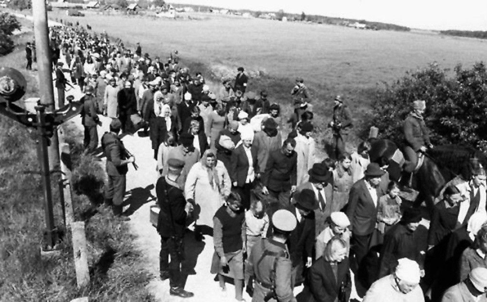

Общее - “О Генеральном плане ОСТ”

28 мая 1942 года сотрудником Управления штаба имперского комиссара по вопросам консолидации германского народа, оберфюрером СС, профессором Конрадом Мейером-Хетлингом был представлен документ. Этот документ, озаглавленный "Генеральный план Ост", описывал процесс онемечивания захваченных земель на восток от Германии.
«Генеральный план Ост» представлял собой комплекс документов, посвящённых вопросам заселения «восточных территорий» (Польши и Советского Союза) в случае победы Германии в войне.
«Генеральный план Ост» включал в себя перечень документов, в которых рассматривались вопросы заселения «восточных территории», под которыми подразумевались Польша и СССР, после победы нацистами в войне. Не предусматривалось сохранение государственности ни одной нации, Украина, Россия, Латвия и другие просто вошли бы в состав Великогерманского государства.

Генеральный план состоял из трех частей:
- Основные правила будущего заселения.
- Экономический обзор присоединённых территорий и их организация.
- Разграничение населенных пунктов в оккупированных районах.

На завоеванных славянских территориях предусматривалось проведение политики геноцида в ее самых крайних формах. Подрыв «биологической силы» славянских народов планировалось осуществлять следующими основными методами:
- физическим истреблением больших масс народа;
- сокращением населения путем преднамеренной организации голода;
- уменьшением населения в результате организованного снижения рождаемости и ликвидации медицинского и санитарного обслуживания;
- истреблением интеллигенции — носителя и продолжателя научно-технических знаний и навыков, культурных традиций каждого народа и низведением образования до низшего уровня;
- разобщением, дроблением отдельных народов на мелкие этнические группы;
- переселением масс населения в Сибирь, Африку, Южную Америку и другие районы Земли; аграризацией захваченных славянских территорий и лишением славянских народов собственной промышленности».
Памятка немецкого солдата

1) ... Нет нервов, сердца, жалости - ты сделан из немецкого железа. После войны ты обретешь новую душу, ясное сердце - для детей твоих, для жены, для великой Германии, а сейчас действуй решительно, без колебаний...

2) ... У тебя нет сердца и нервов, на войне они не нужны. Уничтожь в себе жалость и сострадание, убивай всякого русского, не останавливайся, если перед тобой старик или женщина, девочка или мальчик. Убивай, этим самым спасешь себя от гибели, обеспечишь будущее своей семьи и прославишься навек.

3) Ни одна мировая сила не устоит перед германским напором. Мы поставим на колени весь мир. Германец - абсолютный хозяин мира. Ты будешь решать судьбы Англии, России, Америки. Ты - германец: как подобает германцу, уничтожай все живое, сопротивляющееся на твоем пути, думай всегда о возвышенном - о фюрере, и ты победишь. Тебя не возьмет ни пуля, ни штык. Завтра перед тобой на коленях будет стоять весь мир.
Рейхскомиссариаты

Остланд
Территории Эстонской ССР, Латвийской ССР, Литовской ССР, Белорусской ССР и небольшая территория РСФСР должны были по плану Мейера-Хетлинга Конрада стать рейхскомисориатом Остленд. В отличие от других рейхскомисориатов, где все население планировалось использовать как бесплатную рабочую силу, Остланд планировалось онемечить а, точнее латышей, эстонцев и латвийцев. Причина этому - схожесть культуры немцев и прибалтийских народов. Славяне, евреи и цыгане должны были быть уничтожены.
Украина
На юге главным аграрным придатком рейха нацисты планировали сделать рейхскомиссариат Украина с областями вдоль Днепра, прибавив к ним земли вокруг Дона и Волги. "Готланд" - так немцы называли Крым, планировался к активнейшему заселению немецкими колонистами с практическим полным "освобождением" его от местных жителей. К Украине должны были отойти Воронежская и часть Волгоградской области. Ещё во время войны на территории Украины построили “опорные пункты”, во главе которых стояли бы немцы, те же из украинцев, кто германизации не подлежал оставались бы в виде рабов в хозяйствах немецких колонистов и местной германизированной "знати". Ну а "лишние" 65% украинцев были бы либо высланы в Сибирь, либо уничтожены.

Дон-Волга
Пространство между Волгой и Уралом планировалось усеять концлагерями 30% русских должны были быть приведены в рабов, остальные - уничтожены или раздроблены на более мелкие этносы и лишены практически своего языка и культуры. Их предназначение - немецких господ, чьи поместья должны были раскинуться по всей оккупированной немцами территории. Чтобы понять, с какой скрупулезностью подходили гитлеровцы к подготовке к будущей политике на Востоке, приведу небольшой пример. Они в деталях расписали организацию железнодорожного движения для перевозки в Сибирь славянского населения и завоза немецких колонистов на наши земли. Собирались даже достроить несколько тысяч километров железнодорожной колеи. Были разработаны специальные двухэтажные поезда, которые должны были доставлять немецких хозяев в их новые владения на Востоке. Вагоны такого поезда обставлялись с невероятной роскошью.
Кавказ
Четвертый рейхскомиссариат – Кавказ – должен был охватить республики Северного Кавказа и Закавказья, отделив СССР от Черного моря. На Кавказе думали "сократить" ненужные народы (чеченцы, ингушский и армянские народы) и объединить в некое подобие конфедерации во главе с немецким рейхскомиссаром.

Туркестан
Пятый рейхскомиссариат нацистской Германии, планировавшийся к созданию нацистским командованием на базе туркестанских советских республик СССР. Туркестан планировали «проредить» и создать на его территории вассальное государство Третьего Рейха, которое бы включало в себя территории современных Казахстана, Узбекистана, Киргизии, Таджикистана и Туркмении. Население этих территорий объединяло не только единое, тюркское и частично иранское, происхождение, но и общая мусульманская религия. По этническим и религиозным причинам планировалось также включить в состав Большого Туркестана территории Алтая, Башкирии и Татарстана, а также, по некоторым данным, Марий Эл и Удмуртию, которые принадлежат финно-угорской группе народов и население которых исповедует в основном православное христианство.

Урал
Нацисты не планировали освоить всю территорию СССР, они планировали установить господство Рейха до линии Архангельск-Астрахань, а до Урала шла бы «буферная зона», отделяющая сибирские гетто с рабами-славянами от немцев, осваивающих новые территории. О колоссальных запасах нефти и газа в Сибири тогда еще почти никто в мире не знал, мы и сами только догадывались, поэтому немцы к Зауралью отнеслись несколько пренебрежительно, как к своего рода отстойнику расово неполноценных народов, включая и ненордических русских. В области за Уралом должны были быть выселены поляки, белорусы, украинцы, значительная часть литовцев и все расово неполноценные народы. За Урал предполагалось направлять западноевропейских колонизаторов ненемецкого происхождения, включая венгров, французов и румын, дабы по крайней мере европеизировать сибирские земли, на онемечивание которых у немцев просто не хватало биологических сил. Ветцель предусмотрительно писал в связи с этим: «Надо еще раз подчеркнуть, что Сибирь является одним из факторов, который при правильном его использовании мог бы сыграть решающую роль в лишении русского народа возможности восстановить свое могущество».

Московия
Москву планировалось затопить. Планировалось перестроить многие села и города чтобы немцы заселяли территории быстрее. По планам Гитлера к окончанию войны железнодорожные пути должны были окутать всю оккупированную территорию СССР. Примерно треть территории России к западу от Урала (Ингерманландия, Брянщина, Таврия и Крым), а также вся Украина, кроме Восточной, Польша и Прибалтика почти полностью очищались от коренного населения, чтобы быть поделенной между примерно 8–10 млн немецких колонизаторов. Первоначально из 45 млн коренного населения 31 млн подлежал отселению в Западную Сибирь, оставшиеся 14 млн должны были подвергнуться онемечиванию. Выселению подлежало 65 % западных украинцев, 75 % белорусов, 80–85 % поляков и т. д. Но Ветцель подправил: с учетом плодовитости коренного населения число выселенных за 30 лет составит не 31, а 46–51 млн человек.
Крым
Уже в июне-июле 1941 года в Германии началась пропагандистская кампания о немецком присутствии в Крыму и о крымских готах в частности. Творцы идеологии нацизма – Розенберг и Гиммлер – озаботились возрождением древней «мечты готов» о собственном государстве. То, что в Крыму были готы, юридически вполне оправдывало оккупацию региона. 16 июля Гитлер заявил, что надо очистить полуостров от инородцев и заселить только немцами. Было сказано, что в будущем необходимо будет преобразовать генералкомиссариат Таврии в Готенланд (область готов). Это название должно подтверждать историческое присутствие здесь древних германцев. К концу 1941 года рейхсминистр Альфред Розенберг рапортовал об успехах по поводу германизации Крыма. Были подготовлены предложения по переименованию ряда городов. Симферополь становился Готенбургом («город готов»), а вот славный город русских моряков Севастополь предполагалось переименовать в Теодорисхафен («гавань Теодориха»). Новой столицей «имперской области Готенланд» должен стать новый город, построенный на Ялтинской гряде. Подлежали переименованию многие поселки и улицы городов. Предприятие, которое должно было производить крымский коньяк, получало название «Готская корона». Местное население и немецкие солдаты постепенно подготавливались, чтобы перейти на германизированную топонимику Крыма.
"Источник жизни"
Лебенсборн Э.В. (буквально: "Источник жизни") была инициированной СС, поддерживаемой государством, зарегистрированной ассоциацией в нацистской Германии с заявленной целью увеличения числа рожденных детей, которые соответствовали нацистским стандартам "расово чистых" и "здоровых" арийцев, основанным на нацистской евгенике(также называемый некоторыми евгениками "расовой гигиеной").

Лебенсборн был основан Генрихом Гиммлером и обеспечивал благосостояние своих в основном незамужних матерей, поощрял анонимные роды незамужних женщин в их родильных домах и выступал посредником усыновление детей такими же "расово чистыми" и "здоровыми" родителями, особенно членами СС и их семьями.
Крест Чести немецкой матери вручался женщинам, родившим больше всего арийских детей. Аборты были легализованы (и, чаще всего, одобрены) нацистами для детей-инвалидов и негерманских детей, но в противном случае строго наказывались.
Фабрика смерти
На месте казни обреченных ставили на край обрыва группами по 30-40 человек и расстреливали из пулеметов. Выстрелы заглушались музыкой и шумом самолета, летавшего над оврагом. Только в Киеве в Бабьем Яру за 29-30 сентября 1941 года было расстреляно 33 771 человек. Вплоть до освобождения города Красной Армией в 1943 года там было убито от 70 до 200 тысяч человек.
Душевнобольные и хронически больные в концентрационных лагерях умерщвлялись инъекцией отравляющих веществ, дала возможность управлению лагерей уничтожать и здоровых людей. Опыт, приобретенный при осуществлении этой программы, впоследствии использовался в истреблении миллионов. Врачи концентрационных лагерей убивали нетрудоспособных заключенных с помощью внутривенного вливания фенола, эвипана - натрия и синильной кислоты.
В начале декабря 1941 года в администрации немецких концлагерей пришли письма от руководства. Сверху поступило распоряжение об использовании газа «Циклон Б» для массового уничтожения людей. Если сначала предписывалось умерщвлять только тяжело больных заключенных, то впоследствии нацисты стали истреблять всех поголовно.
Медицинские опыты - с заражением вирусами, изучением действий химических веществ, газов на организм человека. Заключенных искусственно заражали малярией, гепатитом и другими опасными заболеваниями. Нацистские врачи тренировались в проведении хирургических операций на здоровых людях.